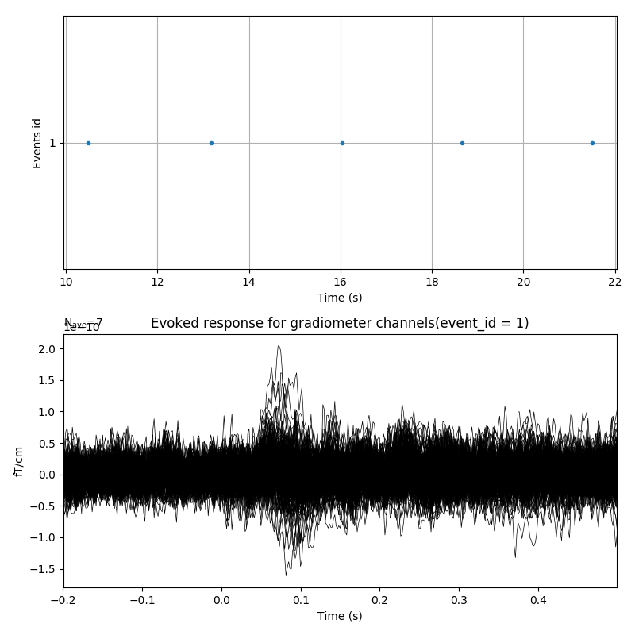

Note
Click here to download the full example code
Compute real-time evoked responses with FieldTrip client¶
This example demonstrates how to connect the MNE real-time system to the Fieldtrip buffer using FieldTripClient class.
This example was tested in simulation mode:
$ neuromag2ft --file MNE-sample-data/MEG/sample/sample_audvis_raw.fif
using a modified version of neuromag2ft available
here
to run the FieldTrip buffer. Then running this example acquires the
data on the client side.
Since the Fieldtrip buffer does not contain all the measurement information required by the MNE real-time processing pipeline, an info dictionary must be provided to instantiate FieldTripClient. Alternatively, the MNE-Python script will try to guess the missing measurement info from the Fieldtrip Header object.
Together with RtEpochs, this can be used to compute evoked responses using moving averages.
Out:
Read a total of 3 projection items:
PCA-v1 (1 x 102) idle
PCA-v2 (1 x 102) idle
PCA-v3 (1 x 102) idle
Running subprocess: neuromag2ft --file /home/circleci/mne_data/MNE-sample-data/MEG/sample/sample_audvis_raw.fif --speed 10
Client: Waiting for server to start
FieldTripClient: Retrieving header
FieldTripClient: Header retrieved
Client: Connected
Applying baseline correction (mode: mean)
Not setting metadata
3 projection items activated
Waiting for epoch 1
Just got epoch 1
Waiting for epoch 2
Just got epoch 2
Waiting for epoch 3
Just got epoch 3
Just got epoch 4
Waiting for epoch 5
Just got epoch 5
Just got epoch 6
Waiting for epoch 7
Just got epoch 7
Waiting for epoch 8
Just got epoch 8
Waiting for epoch 9
Just got epoch 9
Waiting for epoch 10
Time of 2.0 seconds exceeded.
# Author: Mainak Jas <mainak@neuro.hut.fi>
#
# License: BSD (3-clause)
import os.path as op
import subprocess
import mne
from mne.viz import plot_events
from mne.realtime import FieldTripClient, RtEpochs
from mne.utils import running_subprocess
import matplotlib.pyplot as plt
print(__doc__)
# user should provide info and list of bad channels because
# FieldTrip header object does not provide them
data_path = mne.datasets.sample.data_path()
info = mne.io.read_info(op.join(data_path, 'MEG', 'sample',
'sample_audvis_raw.fif'))
# select the left-auditory condition
event_id, tmin, tmax = 1, -0.2, 0.5
# user must provide list of bad channels because
# FieldTrip header object does not provide that
bads = ['MEG 2443', 'EEG 053']
_, ax = plt.subplots(2, 1, figsize=(8, 8)) # create subplots
speedup = 10
command = ["neuromag2ft", "--file",
"{}/MEG/sample/sample_audvis_raw.fif".format(data_path),
"--speed", str(speedup)]
with running_subprocess(command, after='kill',
stdout=subprocess.PIPE, stderr=subprocess.PIPE):
with FieldTripClient(host='localhost', port=1972,
tmax=30, wait_max=5, info=info) as rt_client:
# get measurement info guessed by MNE-Python
raw_info = rt_client.get_measurement_info()
# select gradiometers
picks = mne.pick_types(raw_info, meg='grad', eeg=False, eog=True,
stim=True, exclude=bads)
# create the real-time epochs object and start acquisition
rt_epochs = RtEpochs(rt_client, event_id, tmin, tmax,
stim_channel='STI 014', picks=picks,
reject=dict(grad=4000e-13, eog=150e-6),
decim=1, isi_max=2.0, proj=None)
rt_epochs.start()
for ii, ev in enumerate(rt_epochs.iter_evoked()):
print("Just got epoch %d" % (ii + 1))
ev.pick_types(meg=True, eog=False)
if ii == 0:
evoked = ev
else:
evoked = mne.combine_evoked([evoked, ev], weights='nave')
ax[0].cla()
ax[1].cla() # clear axis
plot_events(rt_epochs.events[-5:], sfreq=ev.info['sfreq'],
first_samp=-rt_client.tmin_samp, axes=ax[0])
# plot on second subplot
evoked.plot(axes=ax[1], selectable=False, time_unit='s')
ax[1].set_title('Evoked response for gradiometer channels'
'(event_id = %d)' % event_id)
plt.pause(0.05 / speedup)
plt.draw()
rt_epochs.stop()
Total running time of the script: ( 0 minutes 17.799 seconds)
Estimated memory usage: 29 MB